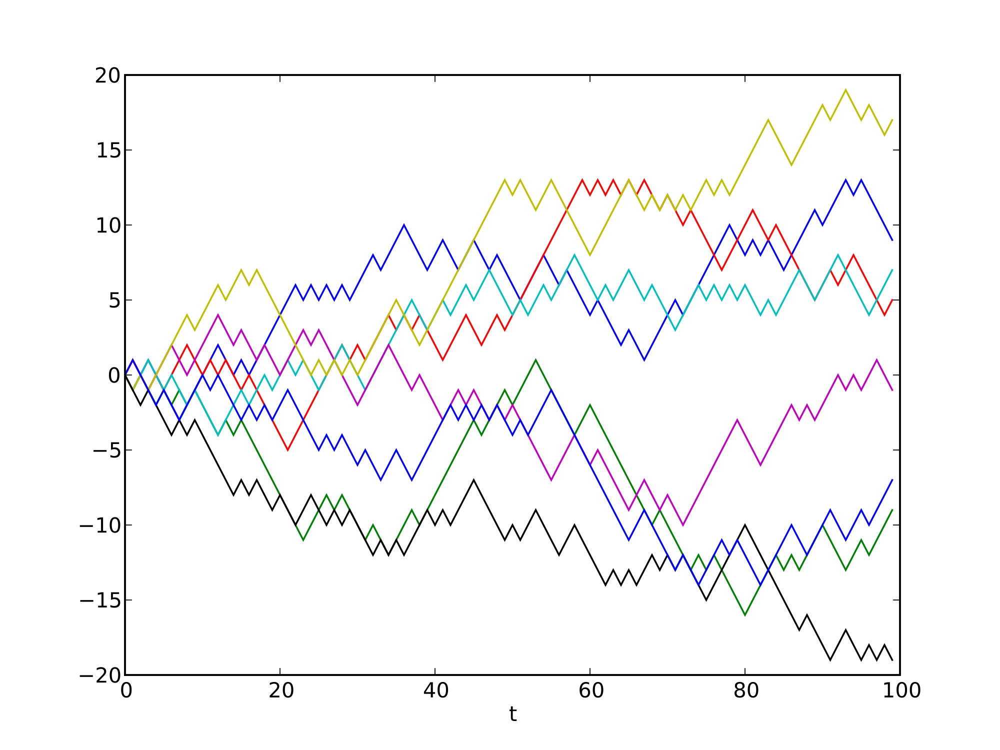
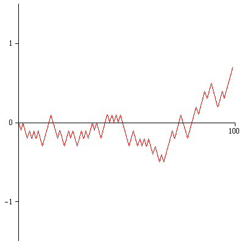

Quelques idées importantes dans l'étude de la gravité quantique de Liouville
d'après David-Kupiainen-Rhodes-Vargas
Yichao Huang, UPMC/DMA
sous la direction de Rémi Rhodes et Vincent Vargas
Idée #1 :
Intégrale de chemin

Mouvement Brownien selon les physiciens
On définit l'action suivante sur l'ensemble des chemins sur [0,1] :
Puis on définit le fonctionnel du mouvement Brownien :
Remarque : minimiseur de l'action = solution classique.
Intégrale de surface (cas de la sphère)
On définit l'action de Liouville :
Puis on définit le fonctionnel suivant :
On obtient le champ de Liouville.
Formellement, la mesure de Liouville s'écrit [à quelques détails près...]
Problème : donner un sens mathématique à cette définition !
Intégrale de surface (cas du disque)
On définit l'action de Liouville :
Puis on définit le fonctionnel suivant :
Difficulté : insertions au bord etc.
Mouvement Brownien selon les mathématiciens
Marches aléatoires (discrétisation)
Mouvement Brownien comme objet limite :
Théorème de Donsker
Cartes planaires aléatoires

Uniformisation (sur la sphère)
Mouvement Brownien selon les mathématiciens :
Processus Gaussien
Fonction de Green
Considérons un champ Gaussien X (un vecteur Gaussien indexé par D) de covariance G.
La régularité de X est mauvaise : X vit dans l'espace des distributions sur D.
Question : comment définir l'exponentiel de X ?
Idée #2 : régularisation et renormalisation
Espérons que cette mesure aléatoire converge...
Chaos Multiplicatif Gaussien
Grâce à [Kahane 85'] :
En dimension 2, le GFF est un chaos multiplicatif !
Chaos multiplicatif Gaussien : simulation avec gamma=0,2
Comment tirer une surface de Riemann aléatoire typique ?
[Polyakov, 81'] : Gravité quantique de Liouville
In my opinion at the present time we have to develop an art of handling sums over random surfaces. Theres sums replace the old-fashioned (and extremely useful) sums over random paths. [...] All transition amplitude[s] are given by the sums over all possible surfaces with fixed boundary.
Idée #3 : symmétrie et gauge
Symmétrie par transformation conforme : propriété de covariance conforme (et KPZ...)
Symmétrie par changement de métrique conforme : anormalie de Weyl
Se ramener à étudier un certain espace des modules (ghosts, déterminant de Faddeev-Popov...)
Invariance conforme
Pour le mouvement brownien : théorème de Lévy.
Invariance conforme pour le champ de Liouville
Remarque : théorie de Liouville classique : $Q=\frac{2}{\gamma}$.